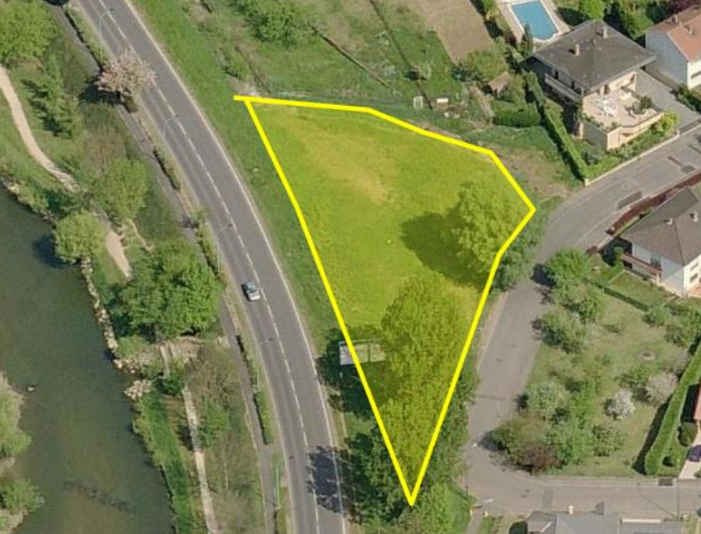
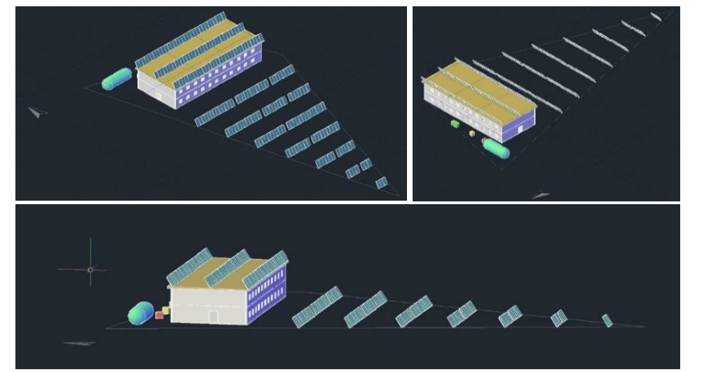
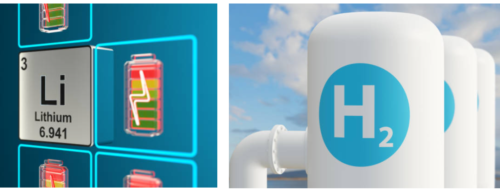
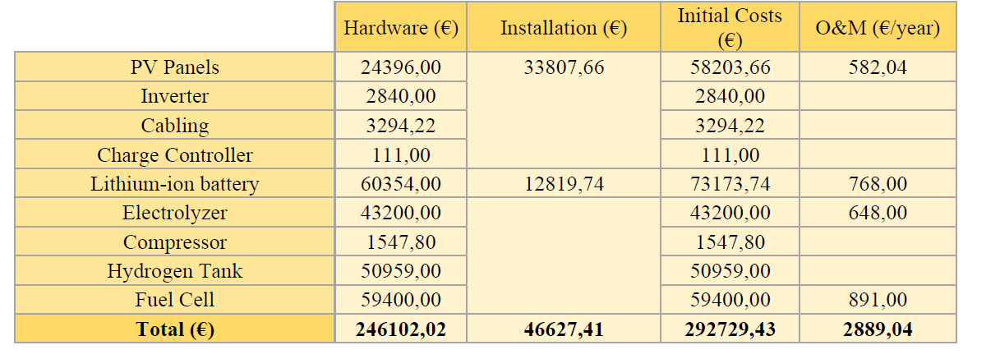

A Renewable Energy Community: Technical and Behavioral Design of a Self-Sufficient System
- Scope: 3 months
- Keywords: Energy Systems, Renewable Energy Generation, Hydrogen Storage, User-Centered Design, Smart Monitoring, Energy Management App
- Tools: Python, Tkinter, Excel
- Other Contributors: P. Losi, S. Klaus, J. Dundure, Y. Li
- Links: [Video]
The Problem
Together with my team, I designed an energy system (generation, storage, smart monitoring system) that covers the entire need of a self-sufficient renewable energy community of 11 households located in the suburbs of Metz (northeast of France). That community aims to mobilize citizens toward energy transition and improve the flexibility of the electricity system. The project intends to make it possible for such communities to collectively produce, store, consume and monitor their energy effectively.
Requirements
The energy system proposed should allow the inhabitants to be as autonomous as possible in the management of their energy system and energy consumption, and therefore to no longer be dependent on energy suppliers. Furthermore, the proposal should ensure that the system is usable and performs well by integrating user needs and behaviors in the design.
Other technical constraints include:
- Energy generation: Solar Photovoltaic
- Energy storage: Batteries & Hydrogen
- Land area: 1878 square meters
- Maximum building surface: 563 square meters
The technical aspects need, thus, to be designed in line with economic and ecological constraints and accounting for the associated user behaviors.
Implementation
A 4-step plan was adopted to tackle this challenge, namely the sizing of the PV system, the sizing of the storage unit, the user behavior analysis to encourage energy sobriety and a financial assessment of the project.
Sizing of the PV System
To determine the ideal size of the solar PV plant, we calculated the minimal number of solar panels needed to meet the average yearly demand of energy. This was done by the yearly average since the demand in winter is much bigger than the summer demand, but the winter production is much smaller. In order not to oversize the PV plant to be able to meet the winter demand, we plan the system to meet the yearly average using Li-ion batteries to compensate day/night energy shift and the hydrogen (H2) system to compensate for the seasonal storage, since it is not economically feasible to do the seasonal storage using only batteries.
The following figure gives an overview of the system’s energy production and user demand, where the mismatch in the consumption and production profiles becomes very clear.
The calculations indicate that peak power needed and total PV panels to be installed will reach, respectively, 47.58 kW and 214 panels.
Due to the expected high land area occupancy by the solar plant, it will be necessary to have part of the PV plant on the rooftop of the building and the remaining panels on the ground. Given the shape and orientation of the terrain, while possible to install the entire system, it will leave very little unoccupied area for the installation of the storage system and personal use of the residents (such as parking, garden, playground, clothesline, etc). Here is the proposed solar plant for the self-sufficient community:
Sizing of the Storage System
We have demonstrated that the best option for this system is hybrid energy storage, where the Li-ion batteries will be recharged during the day and discharged during the night, and the hydrogen system will only store the energy needed to compensate for the seasonal difference in production and demand. The hydrogen would be produced during warmer months and consumed during the winter to cover the excess in the demand.
User Behavior Analysis
The next steps in the project include understanding the willingness of the users to adopt new housing energy saving measures and, subsequently, influencing their behaviours through suitable interventions.
Energy+ and its main interfaces
Energy+ includes three main features implemented using distinct interfaces: weather and forecasts, energy consumption and energy planner.
Energy+ aims to keep the users informed in real-time about the current state of their energy system. It will be installed in each household, connected to the sensors of the overall electrical system to gather relevant information about the energy production and consumption, as well as to the Wi-Fi to provide weather forecasts and related notifications. Each household will possess a unique account and will access the app whether on computers or mobile devices.
@Login & Forecast Interfaces
The users are provided with a weather forecast feature which enables them to input the name of their city of residence and see the forecast for the next four days. This forecast feature also comes with a set of notifications that serve as alerts helping the users to become aware of possible fluctuations in their amount of energy generated and stored.
Finally, by clicking on the Energy-saving suggestions button, the users will head directly to the energy planner interface in which they will find automatic recommendations to optimally reduce consumption based on the weather fluctuations.
@Consumption & Planner Interfaces
As the users adjust the sliders, the energy planner tracks the amount of energy used by each appliance and when the button RUN is pressed to simulate the outcome of the chosen energy reduction scenario, Energy+ will show in percentage whether the suggested measures taken by the users will be within the available energy for the month i.e. ≤ 100% or beyond the average energy available i.e. > 100%. The users can try different scenarios indefinitely or consult the recommended scenarios under the “Recommended Scenarios” button.
Results
After the technical analysis, the proposed system is mainly composed of:
- 214 PV panels, 6 battery banks of 24 kW capacity, one PEM electrolyser and PEM fuel cell and 45 m3 of hydrogen storage
- A system efficiency around 60.5% while the global efficiency (when considering the total energy received in the PV surface) reaches 8.7%
- The PV and the building will occupy around 1400 m2 of the 1878 m2 of terrain, with the remaining for the installation for the storage system and inhabitants’ use
- A tailored app that will enable the users to decrease their energy consumption up to 30% relying on behavioral nudges
The Levelized Cost of Electricity linked to the described system is more than two times greater than the average price of electricity in France. The costs of the equipment necessary to build the system are still high, in particular costs of the hydrogen storage system: they account for more than 50% of the total initial costs and for almost 70% of the energy storage initial costs.
